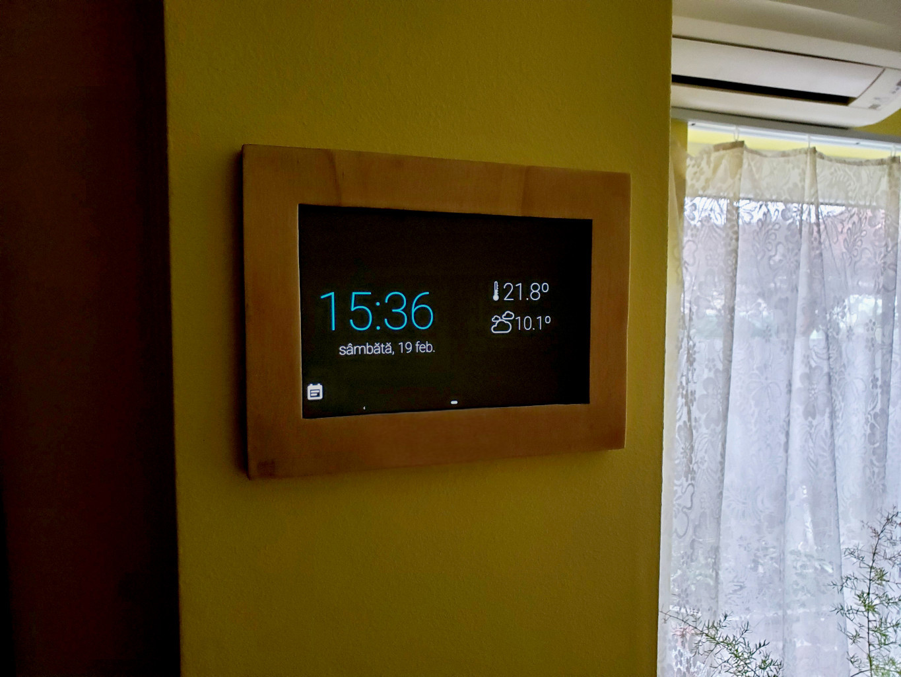

flaON update v18.1
Here are the latest updates to my flaON smart home project. The latest version (v18.1) of my flaON project was just released and brings a new wooden frame for my livingroom tablet, a few software updates to daydream layout and some bugs fixed.
The wooden frame
Because my living room tablet has needed a decent wall frame, I finally managed to get a wooden frame, made by Florian Chis that allows me to beautifully hang up the tablet on my living room's wall. It looks like this:

The wooden frame is simple, clean, and allows me to remove the tablet by sliding it from its place.
The flaON android app updates
Version 18.1 of flaON android app software comes with new stylish layouts for the daydream layout and some fixed bugs for the MQTT reconnection after the MQTT broker went down. For the daydream's layouts, I've added a new stylish layout that includes the flaON's logo and a vertical correction of the shown clock and temperatures.
A short preview of the latest flaON app is below:
The mqtt reconnection bugs were fixed by adding a trigged alarm intent and a broadcast receiver for the missing mqtt connection event. Because I haven't found a more elegant solution (yet), to be effective even when the daydream is active, so I preferred the easy solution to restart the app and perform a new check when the app is re-launched.